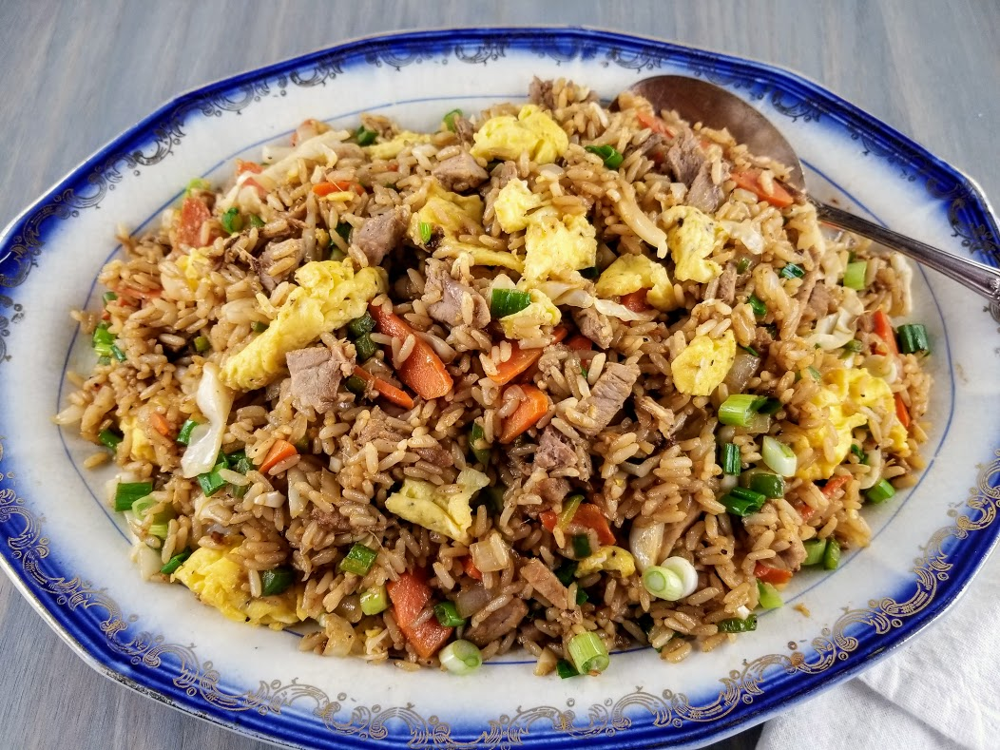

Pork Fried Rice

Description
This recipe will make 4 servings of delicious pork fried rice. Many of the ingredients
can be optional, such as the peas and green onion, but the whole mixture is really a good combination.
I recommend giving it a try, but removing those ingredient can make it both cheaper and easier to make,
and really doesnt detract too much from the flavor.
Let me know what you think, or if you have any recommendation for changes!
Ingredients
- 1 Tablespoon butter
- 3 boneless pork loin, cut into small pieces
- 1 green onion, chopped
- 1/4 cup carrot, chopped
- 1/4 cup broccoli, chopped
- 1 large egg, beaten
- 1 cup cold cooked rice (cook this the day before)
- 1/4 cup frozen peas
- 1.5 tablespoons soy sauce
- 1/8 teaspoon garlic powder
- 1/8 teaspoon ground ginger
Steps
- Gather all ingredients.
- Melt butter in a large non-stick skillet over medium heat. Add pork,
green onion, carrot, and broccoli; cook and stir until pork is cooked
through, 7 to 10 minutes.
- Transfer pork mixture to a bowl and return skillet to medium heat.
Stir egg into the skillet and scramble until completely set.
- Add pork mixture back into the skillet; stir in rice, peas, soy sauce,
garlic powder, and ground ginger.
- Cook and stir until heated through, 7 to 10 minutes. Serve and enjoy!